Las VPN (Redes Privadas Virtuales) son una de esas tecnologías que siempre escuchamos mencionar pero que pocas veces entendemos cómo funcionan realmente. En un mundo donde todo está conectado a Internet, enviar información sensible a través de la red pública es como mandar una carta sin sobre: cualquiera podría leerla.
Aquí es donde entra IPSec, un protocolo que permite crear túneles seguros entre dos puntos, cifrando toda la comunicación. En esta actividad, implementamos un túnel IPSec VPN entre dos routers Cisco 1941, simulando dos sedes de una empresa conectadas a través de un ISP.
El objetivo era que las PCs de ambas redes pudieran comunicarse como si estuvieran en la misma red local, pero con la tranquilidad de que sus datos viajan encriptados. Esto implicó configurar direcciones IP, rutas estáticas, políticas ISAKMP, transform-sets y crypto maps, todo un reto técnico pero súper gratificante.
Implementar un túnel IPSec VPN entre dos routers Cisco 1941 para asegurar la comunicación entre dos redes LAN separadas geográficamente a través de un ISP
La topología implementada está compuesta por tres segmentos principales:
[Imagen de topología de red: R1 - ISP - R3 con switches y PCs]
| Dispositivo | Interfaz | Dirección IP | Máscara | Gateway |
|---|---|---|---|---|
| R1 | G0/0 | 209.165.100.1 | 255.255.255.0 | N/A |
| R1 | G0/1 | 192.168.1.1 | 255.255.255.0 | N/A |
| ISP | G0/0 | 209.165.100.2 | 255.255.255.0 | N/A |
| ISP | G0/1 | 209.165.200.2 | 255.255.255.0 | N/A |
| R3 | G0/0 | 209.165.200.1 | 255.255.255.0 | N/A |
| R3 | G0/1 | 192.168.3.1 | 255.255.255.0 | N/A |
| PC-A | Fa0 | 192.168.1.10 | 255.255.255.0 | 192.168.1.1 |
| PC-C | Fa0 | 192.168.3.10 | 255.255.255.0 | 192.168.3.1 |
enable
configure terminal
hostname ISP
! Configuración de interfaces
interface GigabitEthernet0/0
ip address 209.165.100.2 255.255.255.0
no shutdown
description Conexión a R1
interface GigabitEthernet0/1
ip address 209.165.200.2 255.255.255.0
no shutdown
description Conexión a R3
! Rutas estáticas hacia las LANs
ip route 192.168.1.0 255.255.255.0 209.165.100.1
ip route 192.168.3.0 255.255.255.0 209.165.200.1
end
write memoryenable
configure terminal
! Lista de acceso para tráfico a encriptar
access-list 100 permit ip 192.168.1.0 0.0.0.255 192.168.3.0 0.0.0.255
! Fase 1 - ISAKMP Policy
crypto isakmp policy 10
encryption aes 256
authentication pre-share
group 5
lifetime 86400
exit
! Clave pre-compartida con R3
crypto isakmp key cisco123 address 209.165.200.1
! Fase 2 - Transform Set
crypto ipsec transform-set VPN-SET esp-aes esp-sha-hmac
! Crypto Map
crypto map VPN-MAP 10 ipsec-isakmp
set peer 209.165.200.1
set transform-set VPN-SET
match address 100
exit
! Aplicar Crypto Map a la interfaz pública
interface GigabitEthernet0/0
crypto map VPN-MAP
exit
end
write memoryenable
configure terminal
! Lista de acceso para tráfico a encriptar (LAN Derecha → LAN Izquierda)
access-list 100 permit ip 192.168.3.0 0.0.0.255 192.168.1.0 0.0.0.255
! Fase 1 - ISAKMP Policy
crypto isakmp policy 10
encryption aes 256
authentication pre-share
group 5
lifetime 86400
exit
! Clave pre-compartida con R1
crypto isakmp key cisco123 address 209.165.100.1
! Fase 2 - Transform Set
crypto ipsec transform-set VPN-SET esp-aes esp-sha-hmac
! Crypto Map
crypto map VPN-MAP 10 ipsec-isakmp
set peer 209.165.100.1
set transform-set VPN-SET
match address 100
exit
! Aplicar Crypto Map a la interfaz pública
interface GigabitEthernet0/0
crypto map VPN-MAP
exit
end
write memoryOrigen: R1
Destino: ISP
Comando: ping 209.165.200.2
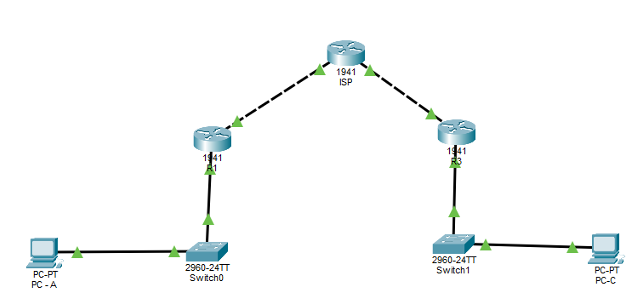
Origen: R3
Destino: ISP
Comando: ping 209.165.200.2
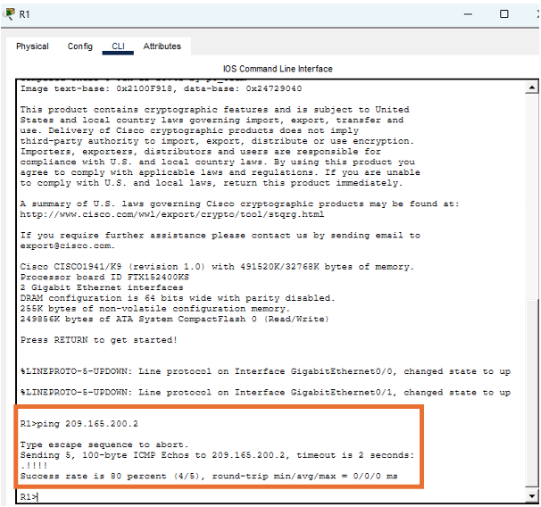
Origen: R1
Destino: R3
Comando: ping 209.165.200.1
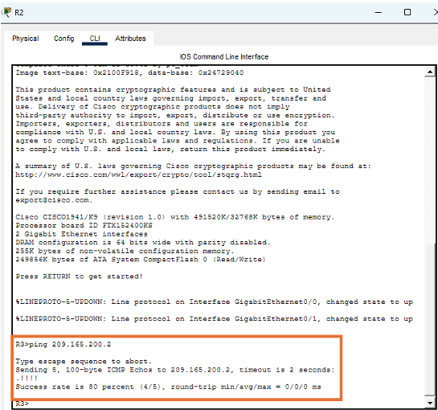
Origen: R3
Destino: R1
Comando: ping 209.165.100.1
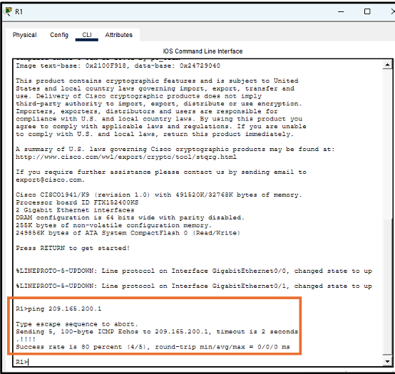
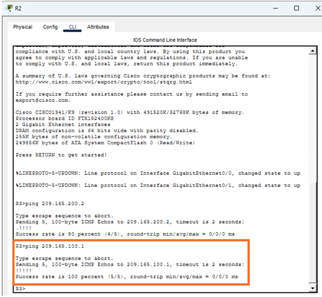
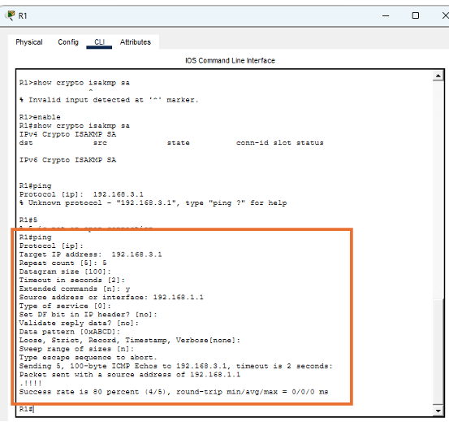
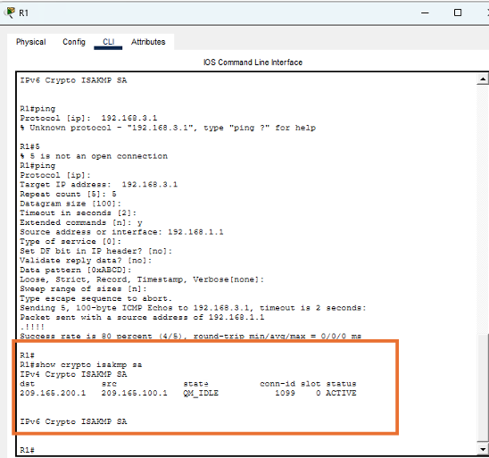
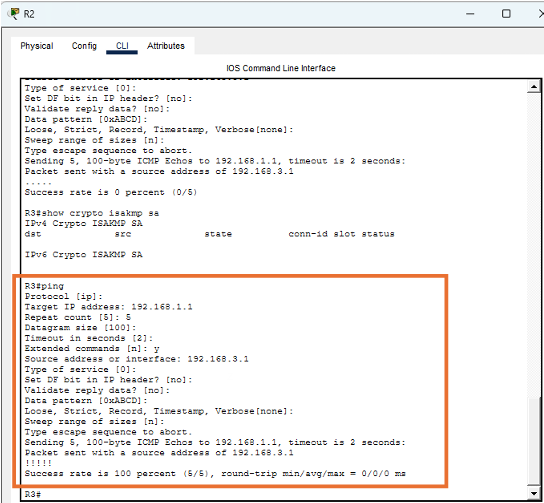
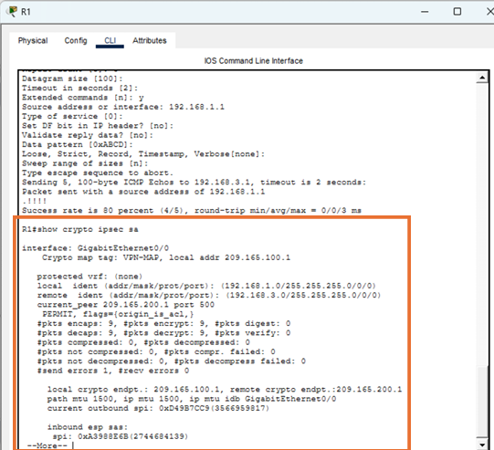
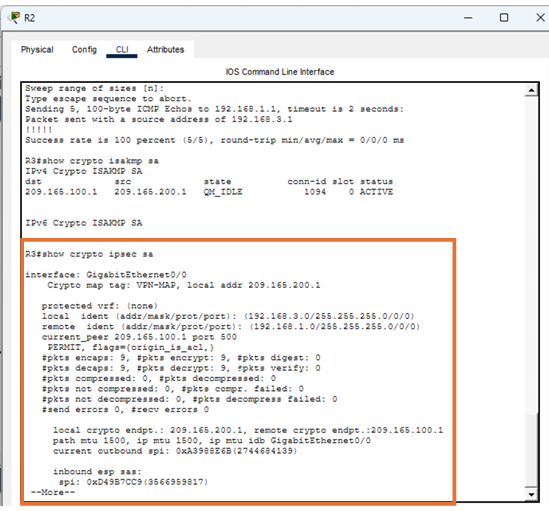
Interpretación: Los contadores encaps y decaps mayores a cero indican que el tráfico se está encriptando y desencriptando correctamente.
Origen: PC-A
Destino: PC-C
Comando: ping 192.168.3.10
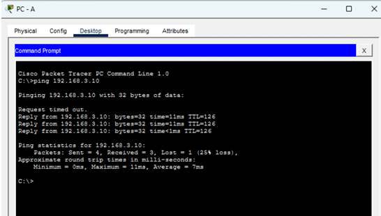
Origen: PC-C
Destino: PC-A
Comando: ping 192.168.1.10
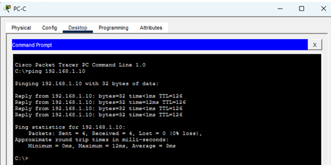
La implementación del túnel IPSec VPN entre dos routers Cisco 1941 constituyó un reto técnico significativo, al ser mi primera experiencia con tecnologías de encriptación y redes privadas virtuales. A través de un proceso de investigación autodidacta y resolución de problemas, se logró establecer exitosamente una comunicación segura entre dos redes LAN separadas geográficamente.
La configuración de rutas estáticas resultó fundamental para garantizar la conectividad extremo a extremo antes de activar el túnel, mientras que el protocolo IPSec con encriptación demostró ser una solución robusta para proteger la transmisión de datos a través de una red pública simulada por el ISP. Las verificaciones realizadas confirmaron el correcto establecimiento del túnel, la encriptación efectiva del tráfico entre las LANs y la comunicación transparente entre las PCs de ambas redes.
Esta experiencia permitió no solo adquirir competencias técnicas en tecnologías VPN, sino también desarrollar habilidades de diagnóstico y resolución de problemas aplicables a entornos profesionales reales.
| Comando | Descripción |
|---|---|
show ip interface brief | Ver estado de interfaces |
show ip route | Ver tabla de enrutamiento |
show running-config | section crypto | Ver configuración crypto |
show crypto isakmp sa | Muestra el estado de las asociaciones de seguridad de la Fase 1 (ISAKMP), permitiendo verificar si el túnel se ha establecido correctamente. |
show crypto ipsec sa | Muestra las estadísticas de la Fase 2 (IPsec), incluyendo la cantidad de paquetes encriptados y desencriptados. |
show crypto map | Muestra la configuración de las crypto maps aplicadas a las interfaces del router. |
show crypto isakmp policy | Muestra las políticas ISAKMP configuradas para la negociación del túnel. |
show crypto ipsec transform-set | Muestra los transform-sets configurados, especificando los algoritmos de encriptación y autenticación. |
clear crypto isakmp | Elimina las asociaciones de seguridad ISAKMP activas, forzando el reinicio de la negociación. |
show crypto isakmp peers | Muestra información sobre los peers ISAKMP configurados. |
| Problema | Posible Causa | Solución |
|---|---|---|
| Ping R1 → R3 falla | Faltan rutas en ISP | Agregar rutas estáticas |
show crypto isakmp sa vacío | No se generó tráfico | Hacer ping extendido desde R1 |
| Estado MM_NO_STATE | IP de peer incorrecta | Verificar set peer en ambos routers |
| Múltiples peers en crypto map | Configuración redundante | Limpiar con no crypto map y rehacer |
| Ping desde PC falla | Gateway mal configurado | Verificar IP y gateway en PCs |
La verdad es que al principio me sentía un poco abrumada con tanta configuración: listas de acceso, fases 1 y 2, claves compartidas, transform-sets, parecía otro idioma. Pero cuando empecé a hacerlo paso a paso y fui entendiendo la lógica detrás de cada comando, todo comenzó a tener sentido. Lo que más me sorprendió fue ver cómo algo tan complejo como un túnel VPN se puede resumir en comandos claros si entiendes la teoría.
Cuando hice el primer ping entre las PCs y luego revisé los contadores con show crypto ipsec sa y vi que los paquetes se estaban encriptando, sentí una satisfacción enorme. También me ayudó a valorar la importancia de las pruebas: si no hubiera verificado la conectividad básica antes de activar el túnel, nunca hubiera sabido si el problema era de ruteo o de VPN. Al final, esta actividad me enseñó que la seguridad en redes no es magia, es pura configuración bien hecha.